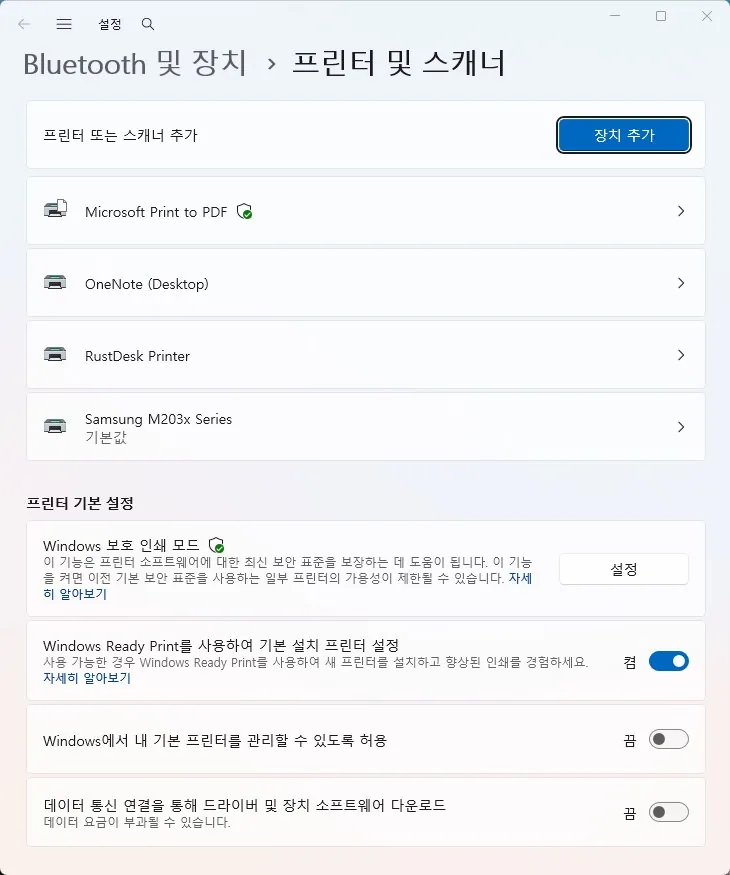

프린터
프린터 오프라인·연결 안 됨의 원인과 점검 순서
이미 설치된 프린터가 오프라인으로 표시되거나 인쇄가 전송되지 않는 경우
이 증상은 프린터를 처음 설치하는 과정에서 막히는 것과는 다릅니다. 어제까지 잘 되던 프린터가 갑자기 "오프라인"으로 표시되거나 인쇄 대기열에서 진행되지 않는 경우입니다.
가장 흔한 원인은 인쇄 스풀러 서비스가 멈췄거나, 프린터가 절전 모드로 들어가 연결이 끊긴 경우입니다. 드라이버를 재설치하기 전에 이 두 가지부터 확인하면 대부분 빠르게 해결됩니다.
네트워크 프린터(와이파이)와 USB 직결 프린터는 원인이 조금씩 다르므로 연결 방식에 따라 나눠서 확인하는 것이 좋습니다.
이 가이드가 필요한 상황
- 프린터 상태 표시가 "오프라인"으로 바뀌어 있다.
- 인쇄를 눌러도 대기열에만 쌓이고 진행되지 않는다.
- 프린터 전원은 켜져 있는데 컴퓨터에서 연결이 안 된 것처럼 표시된다.
먼저 확인할 항목
- 인쇄 스풀러 서비스 재시작 — 인쇄 작업을 관리하는 스풀러 서비스가 멈추면 프린터가 정상이어도 오프라인으로 표시됩니다. 서비스(services.msc)에서 Print Spooler를 찾아 재시작하거나, 정지 상태라면 시작으로 바꾸세요.
- 프린터 전원·연결 상태 확인 — 프린터가 절전 모드에 들어갔거나 와이파이·USB 연결이 끊기면 오프라인으로 표시됩니다. 프린터 전원을 껐다 켜고, 네트워크 프린터라면 같은 와이파이에 연결되어 있는지 확인하세요.
- 기본 프린터로 다시 설정 — 설정 > 프린터에서 "오프라인 프린터 사용" 옵션이 켜져 있는지 확인하고, 해당 프린터를 기본 프린터로 다시 지정하세요.

- 프린터 드라이버 재설치 — 드라이버가 최근 업데이트와 충돌하면 정상 연결 상태에서도 오프라인으로 오인식될 수 있습니다. 프린터를 제거한 뒤 제조사 최신 드라이버로 다시 설치하세요.
원인을 더 정확히 나누는 방법
네트워크(와이파이) 프린터일 때
공유기를 재시작했거나 프린터의 IP 주소가 바뀌면 컴퓨터가 이전 주소로 계속 연결을 시도해 오프라인으로 표시될 수 있습니다. 프린터 속성의 포트 설정에서 IP 주소가 현재와 일치하는지 확인하세요.
USB 직결 프린터일 때
USB 포트나 케이블 접촉 불량도 같은 증상을 만듭니다. 다른 USB 포트에 꽂아보고, 허브를 거치지 않고 본체에 직접 연결해 재현 여부를 확인하세요.
확인 결과에 따른 다음 단계
- 스풀러 재시작으로 해결될 때 — 일시적인 서비스 오류였던 것이므로 그대로 사용하면 되지만, 반복된다면 스풀러를 자동 재시작하도록 서비스 복구 옵션을 설정해두면 편합니다.
- IP·연결 문제로 반복될 때 — 네트워크 프린터라면 공유기에서 프린터에 고정 IP를 할당해두면 오프라인 표시를 예방할 수 있습니다.
피해야 할 실수
- 스풀러 서비스 상태를 확인하지 않고 드라이버부터 재설치하는 것
- 네트워크 프린터의 IP 주소 변경 가능성을 확인하지 않는 것
- 오프라인 프린터 사용 옵션이 켜져 있는 걸 모르고 계속 재부팅만 하는 것
자주 묻는 질문
- 프린터는 정상인데 왜 컴퓨터에서만 오프라인으로 뜨나요? 인쇄 스풀러 서비스 문제이거나, 컴퓨터가 기억하고 있는 프린터 주소(IP 또는 포트)가 실제와 달라졌을 가능성이 높습니다.
- 다른 PC에서는 잘 되는데 제 PC에서만 안 됩니다. 이 경우 프린터 자체보다 해당 PC의 스풀러 서비스나 드라이버, 저장된 포트 설정 문제일 가능성이 큽니다.
함께 보면 좋은 페이지
최종 검토일: 2026-07-17